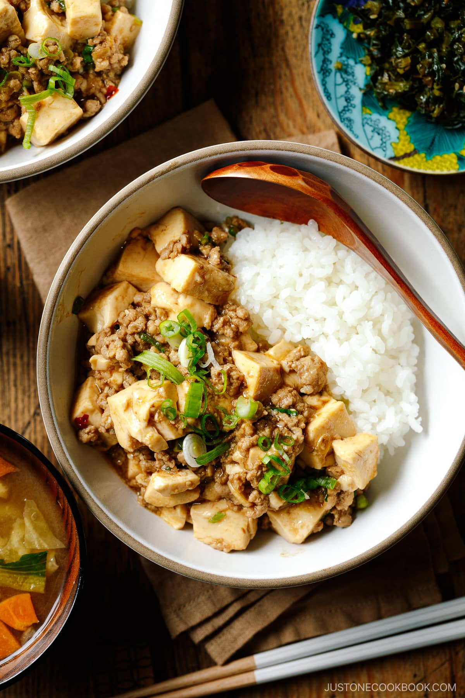
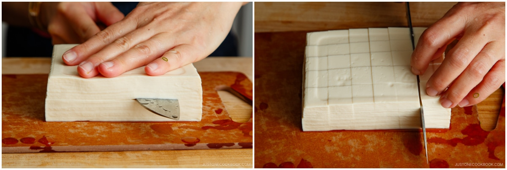
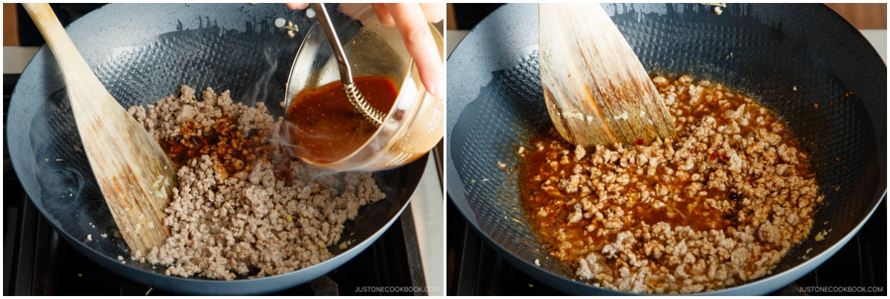
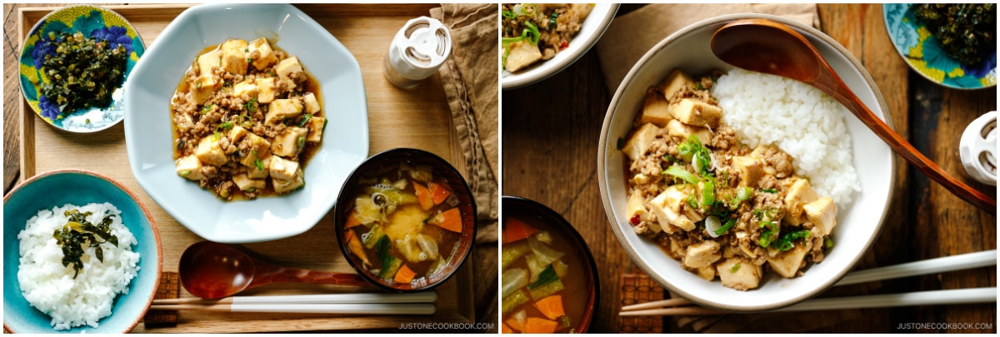

Mapo Tofu

Description
Mapo Tofu is a popular Chinese dish that has been adapted in Japan. It consists of soft tofu cubes in a savory, spicy, and flavorful sauce. The sauce is typically made with ground pork or beef, garlic, ginger, soy sauce, and fermented bean paste (doubanjiang), which gives it a rich umami flavor. It is often spiced with Sichuan peppercorns for a numbing heat and chili paste for a fiery kick.
The dish is usually served hot, often with steamed rice, and is known for its bold, savory taste and satisfying texture, with the tender tofu absorbing the flavorful sauce. Though it originated in Sichuan cuisine, Mapo Tofu has become a beloved dish in Japan with its own regional variations.
Ingredients
For the Sauce
- 2½ Tbsp doubanjiang (spicy chili bean paste) (for less spicy, use 1½ Tbsp non-spicy doubanjiang and 1 Tbsp spicy la doubanjiang; read the blog post for details; use gluten-free doubanjiang for GF)
- 1 Tbsp oyster sauce (use Lee Kum Kee Vegetarian Stir-Fry Sauce for vegan/vegetarian or if you‘re allergic to shellfish)
- 1 Tbsp miso
- ½ Tbsp soy sauce
- 2 Tbsp mirin
- 1 tsp toasted sesame oil
- 1 tsp potato starch or cornstarch
- 4 Tbsp water
For the Mapo Tofu
- 2 cloves garlic
- 1 Tbsp ginger (minced)
- 2 green onions/scallions
- 14 oz soft/silken tofu (kinugoshi dofu) (drained for 15–30 minutes)
- 1 Tbsp neutral oil
- ½ lb ground pork (or your choice of meat; use mushrooms or veggies for vegan/vegetarian)
For Serving
- Japanese sansho pepper (optional)
Steps
To Prepare the Ingredients
- Gather all the ingredients. Here, I use a combination of non-spicy doubanjiang (dark brown color) and spicy la doubanjiang (deep red color).
- Combine the sauce ingredients. To a small bowl, add 2½ Tbsp doubanjiang (spicy chili bean paste), 1 Tbsp oyster sauce, 1 Tbsp miso, ½ Tbsp soy sauce, 2 Tbsp mirin, 1 tsp toasted sesame oil, 1 tsp potato starch or cornstarch, and 4 Tbsp water. Mix well together with a whisk.
- Finely mince 2 cloves garlic (I use a garlic press). Thinly peel off the ginger skin with a sharp knife or scrape it off with a spoon.
- Cut the ginger into thin slices, then into thin julienne strips. Mince the strips and measure 1 Tbsp ginger.
- Slice 2 green onions/scallions crosswise into thin rounds. Set aside some for garnish when serving.
- Drain 14 oz soft/silken tofu (kinugoshi dofu) and cut into ¾-inch (2-cm) cubes.

To Cook the Mapo Tofu
- Heat a wok or large frying pan on medium heat. Add 1 Tbsp neutral oil to the hot pan. Then, add the garlic and ginger to the hot oil.
- Sauté the aromatics until fragrant, making sure they don‘t burn. Then, add ½ lb ground pork to the wok.
- Cook the pork, breaking up the chunks with a spatula or wooden spoon, until the meat is no longer pink.
- Give the sauce mixture a final stir, then add it to the wok. Stir thoroughly as you bring the sauce to a simmer.

- Add the tofu and gently coat it with the sauce. Stir frequently, without mashing the tofu, until it is heated through.
- Add most of the green onions, reserving some for garnish. Stir to incorporate just before taking the pan off the heat.
To Serve
- Sprinkle with optional Japanese sansho pepper and serve immediately in individual bowls. I like to garnish it with sliced green onions.
- You can enjoy Mapo Tofu as the main dish in an ichiju sansai meal. You could also serve it over steamed rice donburi-style for a one-bowl meal.

Back to the list of recipes!